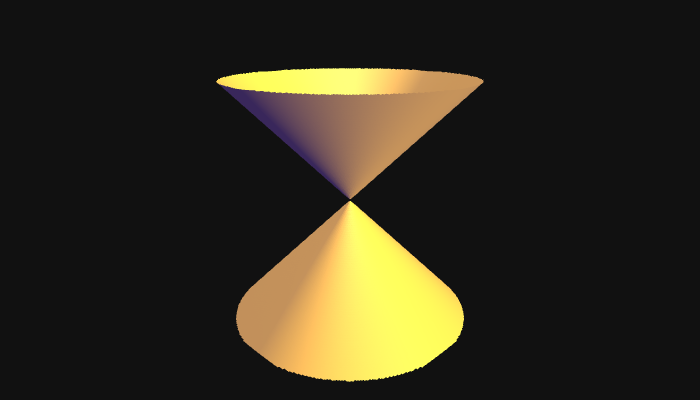
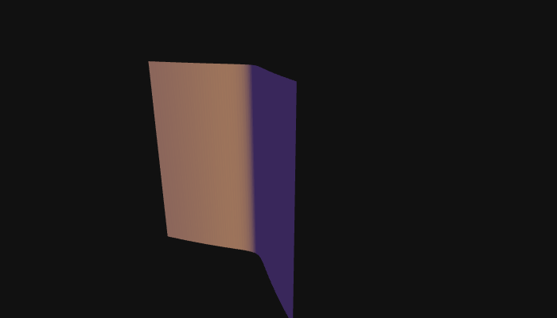
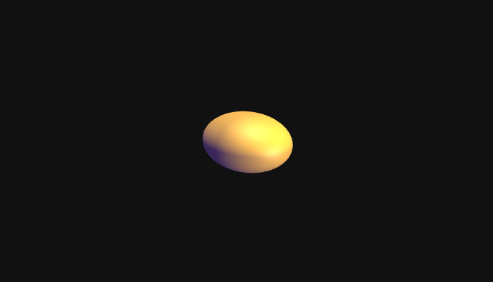
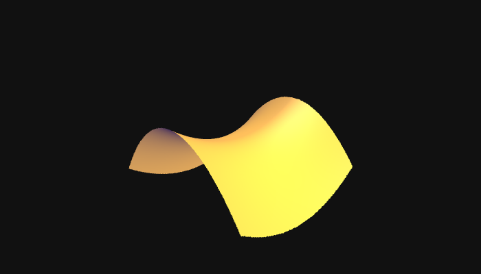
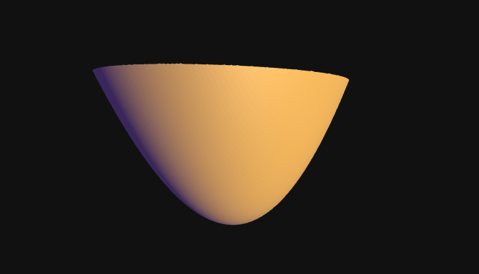

Surfaces
Vague question
How can we relate equations to the shapes of their zero loci?
A menagerie of shapes
Cone: \(x^2+y^2=z^2\)

Freaky “cylinder”: \(y^2=x^2(x-1)\)

Ellipsoid: \(\frac{1}{2}x^2+\frac{1}{3}y^2+z^2=1\)

Hyperbolic paraboloid: \(\frac{1}{9}x^2-\frac{1}{4}y^2=z\)

Elliptic paraboloid: \(\frac{1}{9}x^2+\frac{1}{4}y^2=z\)

Key idea
- Slice the shape with planes and reassemble the pieces.
- This idea recurs throughout the study of geometry (even by professionals!).
- Subdividing, solving, reassembling is also how computers graph these things.
Example: \(\frac{1}{9}x^2+\frac{1}{4}y^2=z\)
We can make a horizontal trace (horizontal slice) at \(z=6\).
Geometrically, we are intersecting the surface with a horizontal plane.
To calculate this algebraically:
- First, set \(z=6\) in the equation to find a curve to plot: \(\frac{1}{9}x^2+\frac{1}{4}y^2=6.\)
- This will be an ellipse. (For which values of \(z\) is this an ellipse?)
- We can plot the ellipse in a plane to visualize this slice. We can vary the value of \(z\) and see how the horizontal traces vary. For the sake of visualization, we are plotting plane at its corresponding height over the \(xy\)-plane, but the “horizontal trace” is the red curve, viewed simply as a curve in the plane, not in space.
Example: \(\frac{1}{9}x^2+\frac{1}{4}y^2=z\)
We can also make a vertical trace (vertical slice) at \(y=0\).
Example: \(\frac{1}{9}x^2+\frac{1}{4}y^2=z\)
We can also make a vertical trace (vertical slice) at \(y=0\).
Example: \(\frac{1}{9}x^2+\frac{1}{4}y^2=z\)
We can make a vertical trace (vertical slice) at \(y=0\).
- Equation for the curve in the vertical plane: \[\frac{1}{9}x^2=z.\]
- What shape is this?
- What shape will a general vertical trace have?
Sketching the shape
- Choose some horizontal traces and sketch them
- Choose some vertical traces and sketch them
- Hope for the best
Demonstration
Let’s try the equation \(x^2+y-z=0\).
- General horizontal trace: \(y=-x^2+a\), \(a\) a constant.
- General \(xz\)-plane vertical trace: \(z=x^2+b\), \(b\) a constant.
- General \(yz\)-plane vertical trace: \(z=y+c\), \(c\) a constant.
- Draw some!
Demonstration
Final assembled product
Cosmic taco: \(x^2+y-z=0\).
Practice
- Calculate horizontal and vertical traces for the hyperbolic paraboloid: \(\frac{1}{9}x^2-\frac{1}{4}y^2=z\)
- How do the traces help you to sketch the object?
- How do the traces help you to tell objects apart?
New shapes to consider
Apply the techniques we’ve been discussing to to draw sketches of the solutions to these equations in three variables.
- \(x^2+y^2-z^2=1\)
- \(z^2-x^2-y^2=1\)
- \(x^2+y^2=1\)
- \(x^2-2x+y^2-z^2=0\)